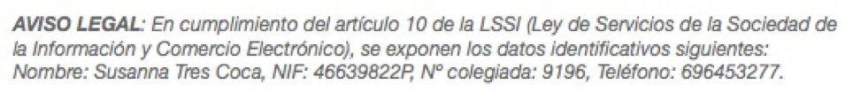

Colegiada núm. 9196 | Acreditada por la FEAP y la EFPA | Miembro titular de la ACPP y la AETG |

|
Atención presencial y virtual |

|
CV
- Licenciatura en Psicología en la UAB
- Título DEA del programa de doctorado en Psicología Evolutiva de la UB
- Formación en psicomotricidad en la Universidad de Marburgo (Alemania)
- Formación en Terapia Gestalt y Psicología Humanista con Claudio Naranjo.
- Máster en PNL y Coaching en el Institut Gestalt de Barcelona
- Postgrado en Terapia Familiar en el Centro Kine de Barcelona.
- Formación en Terapia Integrativa con Richard Erskine.
- Máster de Perfeccionamiento en Psicoterapia Psicoanalítica en la Universidad de Girona y la ACPP.
- EMDR (nivel 2) adultos y niños, EMDR Europe Association.
TRAYECTORIA
| Año | Experiencia |
|---|---|
| 2024-Actualidad | Coordinadora del grupo de trabajo "Psicoanálisis, Cultura y Sociedad" del COPC. |
| 2024-Actualidad | Miembro del consejo directivo de la ACPP. |
| 2023-Actualidad | Miembro de la Climate Psychology Alliance (Reino Unido). |
| 2018-2022 | Clínica Sant Jordi de Barcelona, como psicoterapeuta. |
| 2011-2017 | Centro ABB de Barcelona, como psicoterapeuta especializada en trastornos de la conducta alimentaria. |
| 2007-2010 | Centros educativos públicos de primaria y secundaria, como orientadora educativa. |
| 2001-2011 | Cintra Psicología- Sant Cugat del Vallès, como psicoterapeuta. |
| 1997-2001 | Residencias de ancianos y la Asociación de Enfermos y Familiares de Alzheimer del Baix Llobregat, como psicóloga y psicomotricista. |
| 1997-2001 | CREI-Mundet (Universidad de Barcelona) de atención a niños con dificultades de aprendizaje, como psicóloga y psicomotricista. |
Actualmente y desde hace 20 años, trabajo como psicoterapeuta por cuenta propia.
Contactar:C/Casanova 46, 4to 1a, Barcelona.
Mb: 696453277
Email: trescoca@gmail.com Contactar:
Molins de Rei.
Mb: 696453277
Email: trescoca@gmail.com 